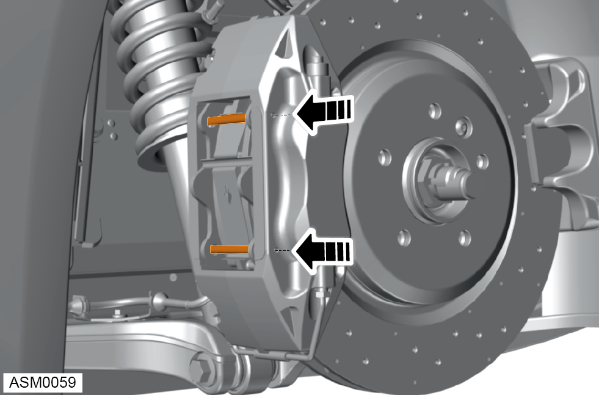
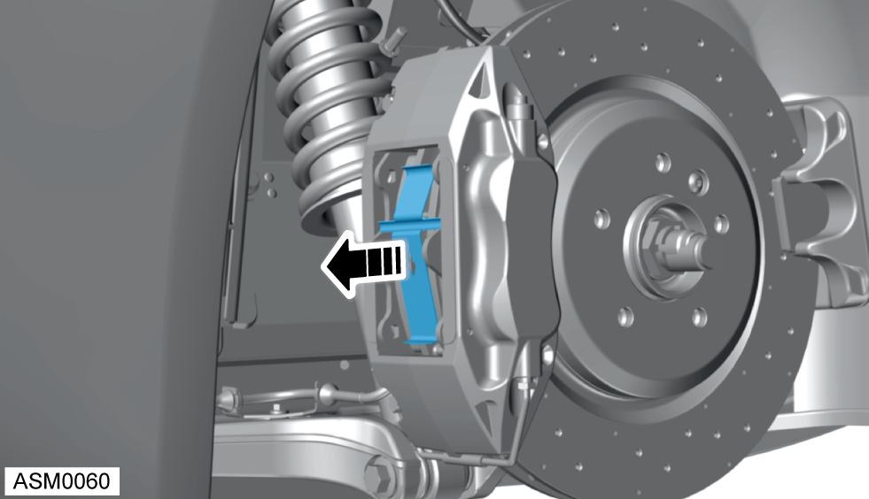
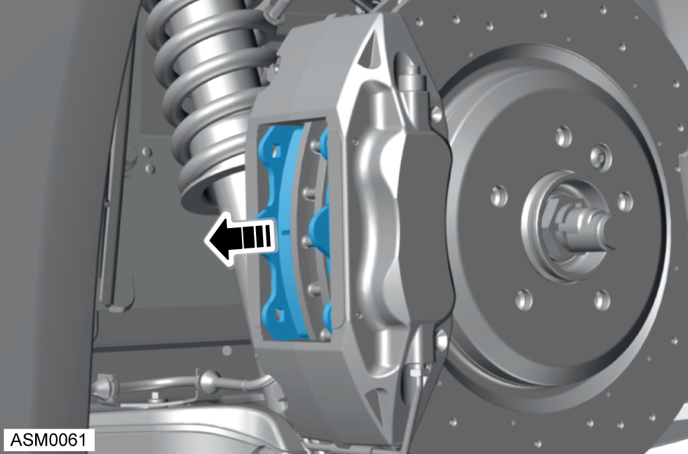

Brake Pads - Rear - Left Side
Print
Operation Code: 33.01.25-02
Removal
- Remove road wheel - rear - left side. Refer to procedure.
- Remove duct radiator outlet - left side. Refer to procedure.
- Remove brake master cylinder reservoir cap.
- Reduce the brake fluid level to allow for brake fluid displacement when caliper pistons are pushed back.

- Remove brake pad retaining pins (x2) in direction shown.
NOTE: Clean off any build up of dirt or surface oxidisation from brake pad retaining pins before removing.

- Remove brake pad anti-rattle spring.
- Ease caliper pistons back.

- Remove brake pads from caliper.
Installation
- Installation is the reverse of removal procedure except the following:
- Clean calipers, retaining pins and anti-rattle springs.
NOTE: Make sure anti-rattle spring is installed with arrow pointing downwards.
- Operate brake pedal at least 5 times to seat pads against brake disc.
 WARNING: Always check brake pads are seated correctly before driving the vehicle.
WARNING: Always check brake pads are seated correctly before driving the vehicle.
- Top-up brake fluid level as required.